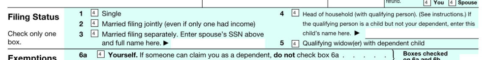
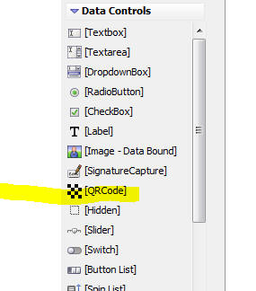
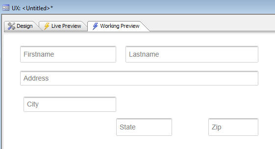
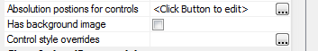
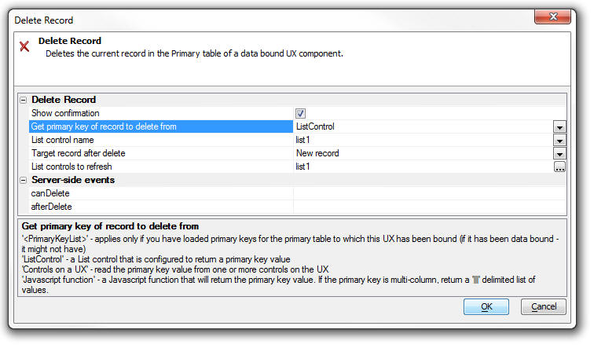
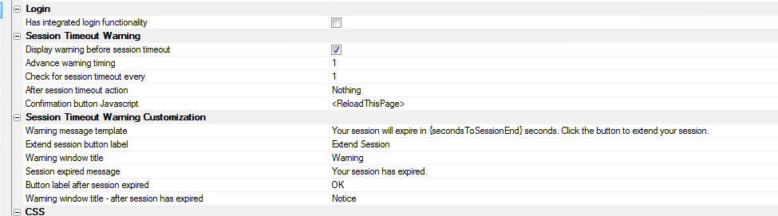
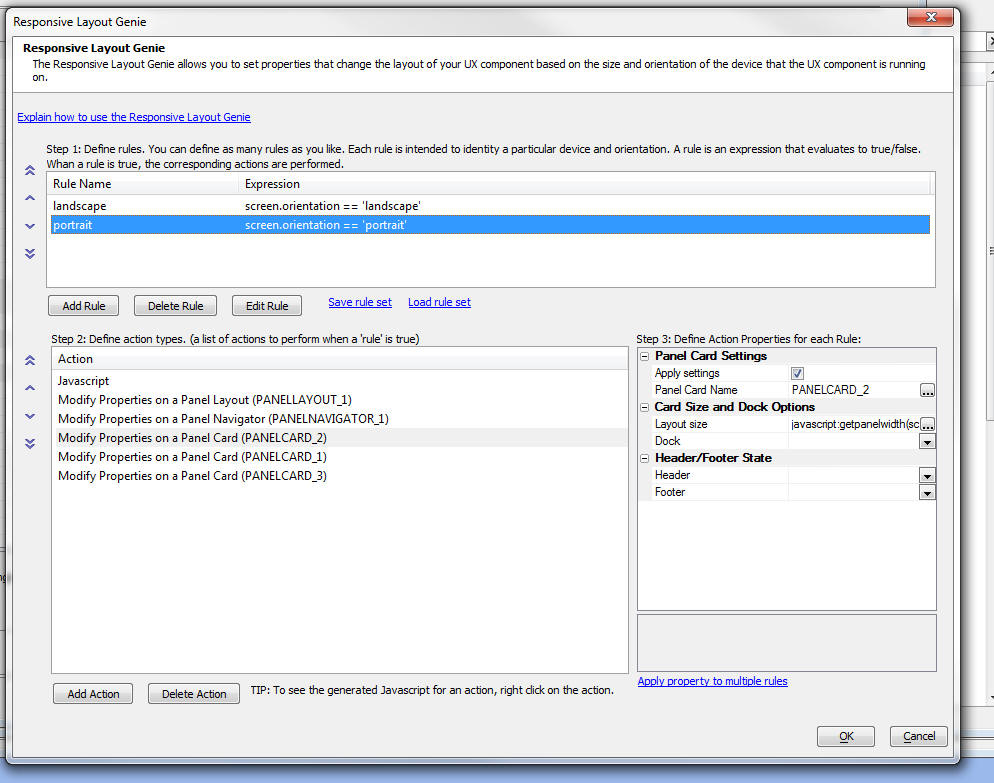
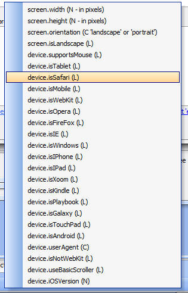
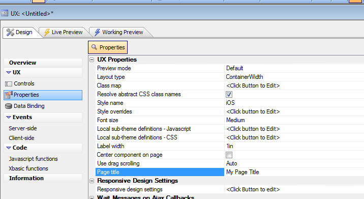

This document describes the updates and fixes made to Alpha Anywhere since its initial release.
To see the 'What's New in V12' document (which describes all of the new features in Alpha Anywhere's initial release) please click here.
Please note that Alpha Anywhere patches are only available to users with
a current subscription.
You can verify your subscription status from within Alpha Anywhere by
going to Help, About, or by clicking this link shown here (https://activation.alphasoftware.com/subscriptionStatus.aspx).
If you install an update for which your subscription is not entitled,
you will need to uninstall the update and rollback to an older version
that you are authorized to use in order to continue using Alpha
Anywhere.
In addition to the official updates that Alpha Software makes available from time to time (which are described in this document), we also make available our internal pre-release builds that allow you to see what features have been added and what bugs have been fixed since the last official update. The features and bug fixes in the pre-release build will be part of the next official update. To see the pre-release notes, please click here.
This update is a required update. It must be installed before November 1.
UX Component - Client-side Readonly Expression - If your UX component has a client-side readonly expression you must recalculate the control and then resave the UX component. To recalculate the control, select the control that has the client side readonly expression and then make a change to any property of the control.
| UX Component | Image and File Upload - In Depth Look at What Happens Behind the Scenes When a File is Uploaded |
When you upload a file or image in the UX
component, the binary data that is uploaded is
stored in temporary session storage until the
user commits the record they are editing. This
video discusses what happens when a file is
uploaded and what happens when the record you
are editing is committed. The video also shows how you can write Xbasic to modify the filename that is stored on disk when the Camera is used to capture an image on a mobile device. Watch Video - Part 1 Watch Video - Part 2 Watch Video - Part 3 Watch Video - Part 4 Download Component |
| Reports | Printing Data that Contains HTML Markup |
In some cases the data in a report you are
printing might contain HTML markup. You might
want to print the HTML markup in its rendered
form, rather than its raw form. In this video we
show how you can configure the report editor to
print HTML markup as rendered HTML. Watch Video |
| UX and Grid Component | Understanding Component Aliases and the Use of Placeholders in Javascript Code |
When you write your own Javascript code in a
Grid or UX component, you often use
'placeholders' (such as {Dialog.object} ) in
your code. In this video we explain in depth how
these placeholders work and we discuss the
concepts of a component 'alias'. Watch Video - Part 1 Watch Video - Part 2 Watch Video - Part 3 Watch Video - Part 4 Watch Video - Part 5 |
| UX Component | Consolidate Multiple Ajax Callbacks into a Single Callback |
This video is aimed at advanced developers. It
shows how the a5_ux_action() utility function
can be used to optimize certain types of UX and
List control actions into a single Ajax
callback. Watch Video - Part 1 Watch Video - Part 2 Download Component |
| Xbasic | Working with XML Documents |
Xbasic has always had a powerful XML parser, but
the new *property_from_xml() function and the
new XML document viewer make it ever easier to
work with XML documents. Watch Video |
| Grid and UX Component | Image Upload to a Character Field |
When you upload images in either the Grid or UX
component, the target field can either be a
binary field or a character field. In the case
of a character field, the filename of the image
is stored in the field and the image file itself
is stored in a file in the specified 'upload
folder'. The filename of the image that is stored in the target character field can be a fully qualified filename, or more likely, you will store the 'shortfilename' (i.e. a relative filename). If you choose to store the 'shortfilename', then you must configure an image path property so that the image filename can be resolved. This video discusses this issue. Watch video |
| UX Component | Responsive Layout - Modifying the Design of a Component Automatically Based on the Device and Screen Orientation |
'Responsive' is the term used to refer to
a design that automatically changes its layout
based on the device on which it is running, the
device orientation and the window size (for
desktop browsers). The UX component has very
powerful tools for implementing responsive
layouts. In this video we show how the Responsive Layout Genie can be used to build highly responsive UX component designs. Watch Video - Part 1 Watch Video - Part 2 Watch Video - Part 3 Advanced settings Watch Video Download Components |
| UX Component | List Controls/Data Series - Using an IN Clause with Array Arguments in a SQL Statement |
List controls, Charts and Data Series in a UX
can all be based on a SQL query. In some cases
you might want to use an IN clause in the SQL
query and reference an argument value to get the
values for the IN clause. This video shows how you can use arrays in a SQL::argument object and then reference the argument in a SQL IN clause. Watch Video Download Component |
| UX Component - List Control | Using the Server-side AfterQuery Event - Computing a Column Total |
For List controls that are based on a SQL query,
the server-side AftterQuery event fires after
the query to get the List data has been
executed. This event is typically used to
compute some Javascript code to return to the
browser. In this video we show how the event can be used to return the total for a column in the List. Since the List is paginated, all of the data in the List query is not currently shown in the List and therefore the calculation of the total must be done on the server. Watch Video - Part 1 Watch Video - Part 2 Watch Video - Part 3 Download Components |
| UX Component | Computing a List Column Total using Client-side Calculations |
In cases where the List data is not paginated
(and therefore the List contains all of the data
in the List query), column totals can be
computed client-side. In this video we show how the data in a column in the List is computed using Javascript. Watch Video Download Components |
| UX Component - List Control | Adding Dynamic Bubble Help (tooltips) to a Field in a List |
In this video we show how you can add dynamic
bubble help to a field in a List control using
some Javascript in the onItemDraw event. Watch Video Download Component |
| UX Component | Embedded UX Components - Understanding the onPanelActivateEvent |
A common practice when designing mobile
applications is to break a large application
into multiple smaller UX components and then
embed components in Panel Cards in the 'master'
UX component. When you do this, it is useful to
be able to execute code whenever a child UX
component gets focus. In this video we show how the onPanelActive client-side event in a child UX will fire whenever the Panel Card in which it is embedded gets focus. Watch Video Download Components |
| UX Component | Annotating an Image using the Signature Capture Control |
The signature capture control can be used for
more than capturing images. In this video we
show how a medical application can use the
signature capture control to annotate an image
of the body to indicate affected areas. Watch Video Download Component |
| UX Component - List Control | Server-side Summary Values |
For List controls that are based on SQL data,
you can specify that summary data (e.g. total,
avg, count, min and max) should be computed for
certain columns in the List control. The summary
computations are based on the List query (not on
the rows actually visible in the List). In the
case of a paginated List, there may be more rows
in the query than are visible in the List. For
example, the query might have 1,000,000 rows,
but the list might show 20 rows at a time. This video shows how a List control is configured to compute summary values, and then how the afterServerSideSummaryCompute event in the List is used to update a label on the UX component showing the summary values. Watch Video |
| Grid Component | Locking the Screen while a Long Running Ajax Callback is Executing |
If a Grid or UX component makes an Ajax callback
that takes a long time to complete, you might
want to display a message to the user telling
them to wait and also you might want to 'lock'
the screen to prevent them from firing other
callbacks until the current callback has
completed. In this video we show how this is easily done using a custom modal window. Watch Video |
| Grid Component | Storing State Information |
Both the Grid and the UX allow you to store
'state' variables that are available on both the
client and server-side. The UX has always allowed you to set state variables on the server side (in any server-side event or an Ajax callback) by setting variables in the 'e._state' object. Previously, to set state variables on the server side in the Grid you had to generate Javascript code. Now, you can also set variables in the e._state object on Grid server side events. This video shows how this is done. Watch Video - Part 1 Watch Video - Part 2 |
| UX and Grid Component | Overview of How to Localize a UX or Grid Component |
In this video we give a brief overview on how a
Grid or UX component can be localized so that
the same component can be used for different
languages. The technique involves using either
Language tags (<a5:r>) or Text Dictionary tag
(<a5:t>) around text strings that need to be
localized. Watch Video - Part 1 Watch Video - Part 2 For certain languages, the text flow direction is 'right to left' (e.g. Hebrew, Arabic). In this video we show how you can execute Javascript to change the text flow direction for the whole page. The Javascript is added to the component's render complete event. It sets the text direction using this code: document.body.style.direction= 'rtl' Watch Video - Part 3 |
| UX Component | Show/Hide Buttons in Panel Header/Footer Without Messing Up Button Alignment |
A common pattern in mobile applications is to
have buttons in a Panel header or footer and to
space the buttons so that some are left
justified, some centered and some right
justified. Then you might show/hide one or more
of the buttons, but you don't want the spacing
on the buttons to be affected. This video shows how this can be done. Watch Video |
| UX Component | Building a Menuing System in a UX Component Using Docked Panels in a Panel Layout |
In mobile applications is it common to build
menus that slide in from the right or left of
the screen. In this video we contrast how this
is accomplished in jQuery mobile and Alpha
Anywhere. The approach we have taken in this
video for Alpha Anywhere shows how the menus can
be placed in Panel Cards that are docked inside
a Panel Navigator. Watch Video - Part 1 Watch Video - Part 2 Watch Video - Part 3 Watch Video - Part 4 Watch Video - Part 5 Download Components |
| UX Component | How to Dynamically Change the Code on a Button |
(Advanced Javascript Developers) This video
shows how you can dynamically change the code
associated with a button on a UX component by
'unbinding' the existing code and then 'binding'
new code. Watch Video |
| UX Component - List Control | Edit the Current Row in a List Control in another UX Component |
The Grid component has an option in Action
Javascript to edit the current row in a Grid
using a UX component (that is data bound to the
same table that the Grid is based on). This
option also allows you to add a new record to
the Grid using a UX component. The action for
the Grid is called: "Open a UX component to Edit Current Record in Grid, or add a new Record" Now an analogous action is available in Action Javascript to edit the current row in a List control (for Lists that are based on SQL or DBF data sources) using another UX component that is data bound to the same table that the List is based on. The action for the UX is called: "Open a UX component to Edit Current Record in List Control in a UX, or add a new Record to a List Control in a UX" Watch Video |
| UX Component - Mobile | Panel Layout - Understanding the Different Ways in Which a Docked Panel Can Be Shown - 'Over', 'Slide' and 'Push' |
Using Panel Layouts that contain multiple child
Panels is common when building mobile
applications. One or more of the child Panels
that are shown in a Panel Layout can be 'docked'
(i.e. hidden). Panels can either be explicitly
docked, or conditionally docked (for example, on
an orientation change). Panels that have been docked can be shown (typically by clicking on a 'controller' button in a Panel Header). When a docked Panel is shown, you can specify the method use to show the Panel. This method discusses the various methods - Over, Slide and Push Watch Video |
| UX Component - Mobile | Overview of Different Methods for Specifying the Size of a Panel in a Panel Layout |
When using a Panel Layout you can optionally
specify the size of each Panel that is displayed
within the Panel Layout. When you specify the
size of a Panel, you can use either an absolute,
percentage or relative size. This video
discusses the various options. Watch Video |
| UX Component | Embedding Reports into a UX Component and Dynamically Filtering the Report |
Reports can be 'embedded' into the UX component
and then dynamically filtered based on values
that the user enters into controls on the UX.
This allows for powerful interactive dashboard
type applications where users can interact with
reports. This video shows how this can be done. Watch Video |
| UX Component | Custom Styling for RadioButton and CheckBox Controls |
The standard way in which browsers render
checkbox and radiobutton controls is pretty
drab. In this video we show how the UX component
allows you to apply a rich set of styling
options to radiobutton and checkbox controls. Watch Video - Part 1 Watch Video - Part 2 Watch Video - Part 3 Download Component |
| UX Component | Positioning Controls at Absolute Locations on the Screen using the WYSYWIG Builder - Understanding the AbsoluteLayout Container |
By default, the UX component lays out the
controls that have been placed on the component
automatically, 'flowing' the controls from left
to right, top to bottom. All controls are
perfectly aligned. However, there are times when
you want more precise control over the placement
of controls. This is especially true when you
want to use an image (for example, an image
of a PDF form you might have) as the backdrop to
a form and then place your UX component controls
at precise locations exactly over the 'fields'
in the image. This video shows how you can place controls in an an AbsoluteLayout container and the set the absolute position and size of each control. Watch Video - Part 1 Watch Video - Part 2 Watch Video - Part 3 Watch Video - Part 4 Watch Video - Part 5 Watch Video - Part 6 Watch Video - Part 7 |
| UX Component | Understanding the 'NoFloat' Container Type |
By default, all controls in a UX component are
wrapped in a DIV with a class name of
A5CWLayout. This class adds a CSS float and
padding so that the controls 'flow'
automatically, left to right, top to bottom
across the page. If a control has a 'break'
after it, a new 'line' is started. This
automatic lay out of the controls on a UX makes
it very easy to design attractive, perfectly
aligned forms. However, there are cases when the padding that is automatically added to all controls gets in the way of the effect that you are trying to achieve and in these cases you can wrap controls in a special 'NoFloat' container. This video explains how the 'NoFloat' container works. Watch Video |
| UX Component | Adding a 'Flow Collapse' Button to Panels in a Panel Layout to Hide/Show Panels |
Panels in a PanelLayout can be hidden or shown
by adding a 'flow collapse' button to a Panel. A
common reason for doing this is to create a
'full screen' view for the 'primary' Panel in a
PanelLayout. This video shows how this is done. Watch Video Download Component |
| UX and Grid Component - | 'NotInList' Event for Auto-Suggest and Edit-Combo Controls |
The 'NotInList' event fires when the user enters
a value into an Auto-suggest or Edit-combo
control and the value entered is not is the list
of available choices for the control. Watch Video |
| Reports | Printing QR Codes |
Printing QR Codes on Layout Table Reports is now
a built-in feature. Watch Video |
| UX Component | Displaying QR Codes on a UX Component |
A common requirement, especially in mobile
applications, is to display data encoded as a QR
code. The UX component has a built-in QR Code
control that makes it very easy to display any
data in the form of a QR Code. This control uses
Javascript to generate the QR Code. Because it
is a pure Javascript control, no Ajax callback
is required and therefore it is very fast.
However, you can also generate QR codes on the
server. This video shows how QR codes can be shown on a UX component using both client-side and server-side techniques. Watch Video - Part 1 Watch Video - Part 2 Download Component |
| Reports | Absolute Positioning of Objects in a Layout Table Report - Using a Form Image as Report Background |
In a previous video we have shown how the UX
component supports absolute positioning of
controls over a bitmap image of a form
(typically a PDF form). Layout Table reports also offer the ability to also use an image of a form as the report background and to then position the report fields directly over the 'fields' on the background image. This video shows how this is done. Watch Video - Part 1 Watch Video - Part 2 Watch Video - Part 3 |
Reports - Printing Reports that Contain HTML Markup
in the Data - In some cases the data in a report you
are printing might contain HTML markup. You might want
to print the HTML markup in its rendered form, rather
than its raw form. In this video we show how you can
configure the report editor to print HTML markup as
rendered HTML.
Watch Video
UX Component - Buttons - How to Programmatically Enable and Disable Buttons - In V12 all buttons on the UX component are 'Adanced Buttons'. (In V11 buttons could either be 'standard' or 'advanced'). Advanced buttons are implemented as Javascript objects and so in order to enable or disable them programmatically, you need to get a pointer to the object and then call the object's .setDisabled() method.
NOTE: All Javascript controls, not just buttons, in the UX (List, ButtonList, SpinList, Tree, etc.) support the .setDisabled() method.
For example:
var bObj = {dialog.object}.getControl('BUTTON_1');
//set the button disabled
bObj.setDisabled(true);
//now enable the button
bObj.setDiabled(false);
If the button is in a Repeating Section, and you want to call the .setDisabled() method for a specific button instance (say the button in row 3), then you can pass in an optional parameter to the .setDisabled() method. For example:
//get a pointer the button element in row 3
var eles = $('{dialog.componentname}.V.R1.BUTTON_2_A5INSTANCE3');
//pass in eles as an optional argument to the .setDisabled()
method
{dialog.object}.getControl('BUTTON_2').setDisabled(true,eles);
NOTE: In the above example, if you did not pass in the optional second argument to the .setDisabled() method, the button in every row of the Repeating Section would have been disabled.
UX Component - Lists and Embedded Components - Delay Render Until Visible - Panel Layouts - Panels and Embedded Objects that were set to delay render until visible were not rendered if they were in a Panel Card inside a Panel Layout if the initial state of the Panel Card was 'docked'.
Forms - Super Controls - Google Maps Supercontrol - Windows 7/8 - If you used the Google Maps Superconrol in a Form on a machine where IE10 was installed, you would get a Javascript error. This error is apparently a bug in IE10 because the same Form runs without error on XP (where IE8 is used). A work around for this IE bug has been found and now the Form will work on Windows 7/8 without error.
Reports - Layout Table Reports - Linked Reports - If a child report uses arguments, and the parent report also uses arguments, then in the dialog where the child report is linked, you can now specify argument bindings to bind a child report argument to a parent report argument. Previously you could only bind child report arguments to literal or field values.
Report - Layout Table Reports - Linked Reports - Arguments in the Report Filter - If a child report (that was based on a SQL query) defined a filter in the report definition that used arguments, when this report was linked by a parent report, the child report arguments were not seen. Child report arguments were only seen if they were part of the report Data Source.
UX Component - List Control - Scrolling - As a result of changes to the change event described in a previous pre-release build, scrolling in he List caused the List's onClick event to fire. This is now fixed. Here is how tapping, and scrolling and List events now work:
ReportMailer and Netmailer - The installers for both have been updated for V12. If you need to use either of these addins with V12, please download the installers from the location specified in your order confirmation email.
UX Component - Data Bound - Security - If a UX component had security on a control so that for certain roles a control was not present on the UX, when doing an insert into a SQL table, you would get an error.
UX Component - Action Javascript - Insert, Update or Delete on an Unbound UX - Fixed some issues with the action.
Grid Component - Detail View - Edit on Demand - Cancelling out of the New Record - If a Grid with a Detail View was configured to only edit on demand when cancelling out of a new record, the Detail view did not return to the correct state (showing controls as labels, and not textboxes).
AlphaDAO - MySQL - Longbinary Fields - Fixes an issue with inserting null blobs inot longbinary fields.
Grid Component - File Export - In the case of an ascii export, was not honoring the extension if you supplied a custom client side filename.
Windows 8.1 - Working Preview - Windows 8.1 has made a change that is causing Working Preview in the Component Builders to fail. You will receive an error message from Javascript ("access denied"). This build has a work around so that Working Preview is now working in Windows 8.1.
Report Server - The 4 core Report Server is now automatically enabled without requiring a Feature Key to be added. Previously, the Report Server was only enabled if you had entered a Feature Key.
TIP: If you want to disable the Report Server, you can go to Project Properties and disable it from there. The setting will apply to the current project.
UX Component - Action Javascript - Map Actions - Add Marker to a Map - If you selected the action to add a marker to a map and you passed in a comma separated latitude/longitude value (e.g. 31.65583, -81.21025) the marker was not positioned correctly on the map. The problem did not occur if you passed in an address. The reason that the marker was not being positioned correctly was that the generated code passed the lat/lng value to the .addMarker() method as a string, when it should have been passed in as an array. To fix the problem you will need to edit and resave the action in your component.
UX Component - Cascading Dropdown Controls - Repeating Sections - If a UX component had Repeating Sections, and had cascading dropdownbox controls in both the top level section of the UX and in a Repeating Section, the cascading dropdown in the Repeating Section was not populated correctly when the UX was populated with an existing record.
UX Component - Opening Child UX Components in Dynamic Panels - Fixed a bug where the Image Upload action in a child UX component that was opened in a Dynamic Panel did not work.
TabbedUI Component - Grid Component - Multi-line Text Area - Under some circumstances when working with a Grid that has a multi-line text-area control in a Tabbed UI, pressing down or up arrow in the text-area would not move the insertion point.
Grid and UX Component - Edit Combo - Did not scroll the current selection into view.
Reports - HTML Reports - SQL Tables with Spaces in Field Names - Fixed a bug in HTML reports when there were spaces in field names.
.Net Framework 4.5 - Alpha Anywhere currently requires .Net 4.0. We will soon be switching to .Net 4.5. In anticipation of this change the Full and Patch installers will now install .Net 4.5 on your machine if it is not already installed.
UX and Grid Component - Javascript Confirmation Windows - Title Direction - By default, all confirmation dialogs show the title on the left and the close icon on the right. For right to left languages, you might want to change this.
To do so, put the following Javascript in the Grid or UX onRenderComplete client-side event:
A5.msgBox.window = {
title: {
direction: 'rtl'
}
}
Reports - Layout Table Reports - Absolute Layout - Layout Table Reports now support absolute positioning of fields. This feature is similar to the absolute positioning of controls in a UX component using an AbsoluteLayout container.
The primary motivation for adding this feature to reports is to allow you to use an image of a form (for example, an image of a IRS 1040 PDF form) as the background for a cell in a Layout Table report, and to then allow you to place the fields in the report at explicit locations so that they print 'on top of' the fields in the image background.
NOTE: This feature is only available for Layout Table reports that are being edited in the full report editor - not in the Quick Report genie.
To access the feature, double click on a cell in the Layout Table report. The 'Cell Contents' dialog opens up. Note a new choice in the dialog - 'Absolute HTML'.
If you select this option, then click the 'Edit...' button, the Absolute Layout editor for the cell opens up:

The editor shows the available fields, a 'canvas' where you can place the fields using drag and drop actions, and a property sheet showing properties of the selected field.
NOTE: Unlike the UX component, the size of the editing region (shown as 312 by 138 pt in the above image) cannot be changed in the editor. The size of the editing region is determined by the size of the cell in the Layout Report.
For each field that you place on the canvas, you can use the Style property in the Property Sheet to define properties (using HTML CSS syntax) to control the appearance of the field in the report.
For example, if you want a field in the absolute layout HTML to appear in red, with a blue border, you would define the following for its Style property:
color: red; border: solid 1px blue;
Placing 'Radio Buttons' and 'Checkbox' Controls
Assume that the background image for a cell uses the image shown below. Consider the 'Filing Status' area. It is likely that in your table, you have single field called 'filingStatus' that might have a value of 1, 2, 3, 4, or 5 stored in the field.
However, when you print a report, you want to print an 'X' above the appropriate box in the image.
To do this, you would need to define five calculated fields in your report. For example:
filingStatus_1 = if(filingStatus = 1, "X","")
filingStatus_2 = if(filingStatus = 2, "X","")
filingStatus_3 = if(filingStatus = 3, "X","")
filingStatus_4 = if(filingStatus = 4, "X","")
filingStatus_5 = if(filingStatus = 5, "X","")
Having done this, when you open the Absolute Layout editor, your field list will show the five calculated fields you have defined, and you can place each one of these fields over the appropriate radio button control on the image.

Defining the Background Image for the Cell
When you are in the Absolute Layout editor, you can define the background image for the cell. When you specify the image, you can specify how the image should be scaled to fit the cell. The options are:
UX Component - Mobile Applications - Location Information - Current location information can be used in several actions in Action Javascript. These actions include Ajax Callbacks, Centering a Map, Placing a Marker on a Map, Filtering a List for Records within the Vicinity of the Current Location.
Now, the Action Javascript builders expose three properties which previously were hard coded to default values. These properties are:
High accuracy - If true, the device will use its most
accurate method to get location information. If false,
the device will use its fastest or lower power
consumption method depending on the device. (Default
true)
Timeout - The amount of time in milliseconds to wait on
the device to acquire location information excluding the
amount of time it takes the user to grant the web page
access to geolocation data. (Default 15000)
Max age - The amount of time in milliseconds to accept a
previously acquired location. 0 means that a new
location must be acquired from the device. (Default
30000).
You can also change the default settings for these properties, by adding Javascript like this (using appropriate values for each of the properties) to the onRenderComplete client-side event:
{dialog.object}.locationMaximumAge = 30000;
{dialog.object}.locationTimeout = 15000;
{dialog.object}.locationHighAccuracy = true;
UX Component - ListControl - onBeforeSelect event - The onBeforeSelect event fires before the Select event. If the event returns false, then the user is prevented from moving off the currently selected row in the List.
Grid and UX Component - Windows, Auto-suggest and Edit-combo - Specifying a Maximum Window Height - When you define the window height for a pop-up window, an auto-suggest control or an edit-combo control, you can specify a window height.
If you leave the height property blank, the window will be sized to accommodate the entire height of the content (which will result in a window that is too high if there is a lot of content).
On the other hand, if you specify an explicit size, then you will end up with a window that looks too big if there is just a small amount of content in the window.
Now, when you specify the window height you can use the 'max' syntax to specify that the window should be automatically sized to fit its content, but should not grow bigger than the specified max size. For example, you can specify the height property as:
max: 300px
UX and Grid Component - Auto-suggest and Edit-combo Controls - 'NotInList' Rule - The 'NotInList' event fires when the user enters a value into an Auto-suggest or Edit-combo control and the value entered is not is the list of available choices for the control.
The primary use case for this event is to allow the developer to add code to the component to add the value that was entered into the control into the table on which the control choices are based so that the next time the user visits the control the value entered will be in the pick list for that control.
UX Component - QRCode Control Type - A new control type has been added to the UX component. The QRCode control displays its value as a QR Code.
The image shown below shows a UX with a QRCode controls.
Watch Video - Part 1
Watch Video - Part 2
Download Component

NOTE: The QRCode control is a client-side control. That means that Javascript is used to generate the QR code. You can also use Xbasic methods to generate servers-side QR codes (as bitmaps or SVG). See ::Qrcode::Creator:: below for more details.
To place a QRCode control on a UX, select the control type from the toolbox.

The QRCode control is just like other data bound controls in that it has a .getValue() and .setValue() method.
To display a QR code, you simply call the .setValue() method of the control. For example:
{dialog.object}.setValue('MYQRCONTROL_1','value to encode');
QRCodes - Xbasic - New methods have been added to Xbasic to generate QRCodes. The methods are:
::Qrcode::Creator::GenerateBmp(c text, c flags)
::Qrcode::Creator::GenerateBmpFile(c text, c filename, c flags)
::Qrcode::Creator::GenerateJpeg(c text, c flags)
::Qrcode::Creator::GenerateJpegFile(c text, c filename, c flags)
::Qrcode::Creator::GeneratePng(c text, c flags)
::Qrcode::Creator::GeneratePngFile(c text, c filename, c flags)
::Qrcode::Creator::GenerateRTF(c text, c flags, n width, n height)
::Qrcode::Creator::GenerateSVG(c text, c flags)
The flags parameter can be set to 'L' (low), 'M' (medium) or 'H' (hight) to indicate the level of error correction in the generated QR Code.
For example, from the Interactive window:
dim svg as c
svg = ::QRCode::Creator::GenerateSVG("http://www.alphasoftware.com","L")
a5_show_html(svg)
To display a QR code in an Xdialog:
svg = ::QRCode::Creator::GeneratePngFile("http://www.alphasoftware.com","c:\myfiles\qr1.png","L")
ui_dlg_box("QRCODE","{image=c:\myfiles\qr1.png}")
Qrcode_bitmap() Function - Generates a bitmap of
a QR Code - This function is a wrapper for the ::QRCode::Creator::GeneratePng()
function. However, it is able to scale the bitmap to an
explicit size.
Returns either binary PNG data or base64 encoded string with 'data:image/png;base64,' prefix
Syntax
A blobOrString = qrcode_bitmap(c text, c flag [,N width , [N height [, L flagBase64encodedWithPrefix]]])
QRCodes - Layout Table Reports - Layout Table Reports now support printing any cell in the Layout Table that contains a text value as a QR code.
To print the contents of a cell as q QR code, simply check the 'Display QRCode for text in cell' property at the bottom of the 'Cell Contents' dialog box.

For example, here is a report showing customers in the sample Northwind database:

UX Component - PanelLayout Containers - Flow Collapse Buttons - Allows you to put a button in a Panel (only applies if the Panel is contained within a PanelLayout) to 'collapse the flow' of Panels that come 'before' the current Panel. By 'collapsing the flow' of a Panel, you make the Panel invisible.
The following set of images help to explain the concept:
The image below shows a Panel Layout with 3 child Panel (the child Panels can be PanelCards, PanelNavigators or PanelLayouts). The PanelLayout flow is set to LTR so that the Panels 'flow' from left to right. All of the Panels in the PanelLayout are currently visible. PanelCard1 and PanelCard2 both have an explicit size (say 100px) and PanelCard3 takes up the remaining available space.

Now, let's assume that PanelCard3 has a button (either in the Panel body itself, but more likely in its header or footer) to 'collapse the flow' (of the Panels that come before it).
If this button was pressed, then the Panels that come before it (PanelCard1 and PanelCard2 - because the flow direction is LTR) will get 'collapsed'. Their widths will get set to zero using an animation.

When the animation has completed, Panel Card3 will consume all of the available space in its parent PanelLayout.

The 'Flow collapse' button acts as a toggle. So, if the button were pressed a second time (while PanelCard1 and PanelCard2 are collapsed), then PanelCard1 and PanelCard2 will be re-shown, again, using an animation.

When would you use a 'Flow collapse button'? Assume that in the above example, PanelCard1 and PanelCard2 contain navigation or menu controls and that PanelCard3 is the main 'work' area of your application. By have a 'flow collapse' button in PanelCard3, you can allows you users to toggle 'full screen' mode on and off.
The primary use case for this pattern is when PanelCard1 and PanelCard2 contain 'navigation' or 'menu' controls and
Defining a 'Flow Collapse' Button
To define a 'Flow Collapse' button for any Panel (PanelCard, PanelNavigator or PanelLayout), set the 'Has a 'flow collapse' button' property in the Panel's Property Sheet.
Once you click this property, you can specify the ID of the button that will act as a 'flow collapse' button.
NOTE: If you have defined an onClick event for the flow collapse button, the event will be ignored since the button is being 'hijacked' to perform the 'flow collapse' action.
The builder allows you to define separate icons to use for when the Panels are in the collapsed state and when they are in the expanded state.
IMPORTANT: If you want to display icons on the flow collapse button you must set the button type to the appropriate option in the properties for the button you specify as the 'flow collapse' button.
UX Component - NoFloat Container Type - By
default, all controls in a UX component are wrapped in a
DIV with a class name of A5CWLayout. This class adds a
CSS float and padding so that the controls 'flow'
automatically, left to right, top to bottom across the
page. If a control has a 'break' after it, a new 'line'
is started. This automatic lay out of the controls on a
UX make it very easy to design attractive, perfectly
aligned forms.
However, there are cases when the padding that is
automatically added to all controls gets in the way of
the effect that you are trying to achieve and in these
cases you can wrap controls in a special 'NoFloat'
container.
In the image below, the first container (red) is a standard container. 'Firstname' and 'Lastname' are on the same line (because the break after 'Firstname' was turned off) as are 'City' and 'State'. Also, each control has padding around it.
The second container (blue) has been set to a 'NoFloat' container. Notice that all controls now are on their own line (even though there is no break after 'Firstname' and 'City' and all padding between controls has been removed.

Xdialog - List Control - W=milliseconds Directive to Delay Firing Selected Event - A new directive can be added to a List control to delay firing the selected event for a specified number of milliseconds.
The directive:
W=milliseconds
is inserted in the Listbox commands (between the % symbols).
To test the effect of this directive, create a new Xbasic script and paste this code in. Then click on a row - a message box will show the selected value. Then hold the down arrow down and the selection will move quickly down the list, but the event which shows the current selection will not fire until you have stopped holding down the down key.
Then, repeat the exercise with te W=2000 directive removed. You will see that the message box is shown for every row.
dim colors as c
colors = a5.Color_Enum()
dim selected as c
dim dlg_title as c
dim dlg_body as c
dim dlg_event as c
dlg_title = "Title"
dlg_body = <<%dlg%
{removecomments}
{removeleadingspaces}
[%W=2000%.100,30selected^#colors!selected_changed];
%dlg%
dlg_event = <<%code%
if a_dlg_button = "selected_changed" then
a_dlg_button = ""
ui_msg_box("",selected)
end if
%code%
dim flagOK as l = .f.
ui_dlg_box(dlg_title,dlg_body,dlg_event)
UX Component - Radiobutton and Checkbox Controls - Custom Styling - The standard way in which browsers render checkbox and radiobutton controls is pretty drab. The UX component allows you to apply a rich set of styling options to radiobutton and checkbox controls.
For example, here is an example of how these controls can be styled:
Watch Video - Part 1
Watch Video - Part 2
Watch Video - Part 3
Download Component
To style a Radiobutton or Checkbox, check the 'Has custom design' property.

Then click the smart field for the 'Custom appearance designer' to open the builder. The builder gives you control over a large number of appearance properties and also shows a real-time preview of the control's appearance.

UX Component - Embedded Obects - Reports - HTML Reports - When you embed a report into a UX component, you now have the option to specify that the report should be rendered as HTML.
Panel Layout - Display Method - 'Push' Option - A new option for the 'Docked Panel display method' property has been added. The option is 'push'. The 'push' method pushes the Panel that are to the left (or right, above or below - depending on the Flow direction)
Panel Layout - Dock Options - Several new options have been added to specify when a Panel that is contained in a Panel Layout should be docked (i.e. hidden). The complete list of options is shown below:
The options prefixed with 'landscape', 'portrait', and 'self' are new.
If a Panel's dock option is set to 'portrait-collapse-before' then the Panel will be docked (i.e. hidden) when the device is in portrait mode, but not when in landscape mode.
If a Panel's dock option is set to 'self-portrait-collapse-before' then the Panel will be docked when the Panel Layout in which it is contained is in 'portrait' mode (i.e. it has a width that is less than its height), regardless of the orientation of the device itself.
Panel Layout - Size Options - New options have been added for specifying the size of a Panel in a Panel Layout. You can now use percentages and negative sizes.
If you specify a percentage size, the percentage represents the percentage of the available space in the Panel Layout.
If you specify a negative size (e.g. -100px), then the Panel Layout will have a size equal to the size of the Panel Layout (in the flow direction), minus 100px.
Grid Component - Alphabet Button Search - Custom Buttons - The Alphabet Button search feature in the Grid has always allowed custom button definition. For example:
A..C = left({searchfield},1) >= 'A' and left({searchfield},2) <= 'C'
In the above example, a button with a label of 'A..C' is defined with a corresponding filter of:
left({searchfield},1) >= 'A' and left({searchfield},2) <= 'C'
Now, you can specify that the filter expression uses arguments. For example the above custom button can now be defined as:
A..C = left({searchfield},1) >= :arg1 and left({searchfield},2) <= :arg1 && a|||c|arg1
The argument value is defined using the syntax:
argumentValue|||argumentType|argumentName
and is separated from the filter by:
&&
When specifying the argument value you can use an expression by prefixing the argument value with an = sign.
For example:
Today's Orders = orderDate = :d1 && =date()|||d|d1
If you want o use International characters in an argument value, then you must use an expression that uses the *html_to_text() function and an html encoded version of the argument value.
For example:
&;#1489; = left({searchfield},1) = :arg1 && =*html_to_text("&;#1489;")|||c|arg1
UX and Grid Component - CSS Editor - Remember Last Pane Used - The CSS editor now remembers the last pane you were on. If you switched to the Code pane, then closed the editor, the next time you open the editor you will be on the Code pane. Previously, the editor always opened on the Design pane.
UX Component - List Control - Action Javascript - Edit Current Row in List - A new action has been added to Action Javascript to allow you to edit the current row in a List control that is based on a SQL or DBF data source in another UX component.
The action is called:
Open a UX component to Edit Current Record in List Control in a UX, or add a new Record to a List Control in a UX
The UX component that is used to edit the List record
must be data bound to the same table that the List is
based on, and the AfterDialogValidate event in the UX
used to edit the List row must have a server-side Action
Script to save the record when the Submit button is
pressed.
UX Component - Logical Checkbox - Prompt Text - You can now specify an optional label that appears to the right of the logical checkbox.
UX Component - Radiobutton, Checkbox and Logical Checkbox Controls - Now wrap the individual choices and their corresponding label in a <span> element. You can specify the class name for this <span> element. This allows for more styling options on these controls.
Web Projects Control Panel - Find File - A new option on the right click menu allows you to search for a particular file in all of the Web Projects in the current Workspace. This function is useful if you have many Web Projects in a particular Workspace and you are not sure in which Web Project a particular file is located.
UX Component - AbsoluteLayout (WYSIWYG) - You can now position controls in a UX component at absolute locations on the screen.
A common use case for absolutely positioning controls is so that you can display an image of a professionally designed form as a 'backdrop' to your UX and then precisely position your UX controls over the 'fields' in the form image.
By default, when you place controls on a UX component, the controls are positioned on the screen automatically by the UX component. The controls 'flow' from left to right, then top to bottom.
For example, say you have have a UX component that has these controls on it:

As the image shows, there is no break after the 'firstname' field, so 'firstname' and 'lastname' will be on the same 'line'.
'address' will be on its own 'line' because there is a break before and after it. Finally, 'city', 'state' and 'zip' will all be on the same 'line'.
Here is how this UX will render:

Because the UX was in charge of rendering, you can see that the baselines of all controls on the same 'line' are automatically aligned. And the left edges of controls at the start of each line are also automatically aligned. Furthermore, automatic spacing has been placed between the controls so that the form lays out nicely.
NOTE: The amount of spacing between controls is defined by setting the 'A5CWLayout Class Padding' property on the UX Properties Pane. By default this is set to 4px. You can set explicit values for top, right, bottom and left using the standard CSS convention: For example: 4px 4px 0px 0px.
An important (and extremely powerful) aspect of the way Alpha Anywhere lays out controls automatically is how the UX component will react when the window in which it is contained is resized. In the example show above, City, State and Zip are on the same line. However if the window is resized smaller and there is no longer space for all of the controls on the line, the Zip control will automatically 'wrap' to the next line. As the window is further resized smaller, eventually the State field will also automatically 'wrap' to the next line.
When you use Absolute Layout, you turn off the automatic layout of controls that the UX component does and instead you take on responsibility for positioning and sizing controls yourself.
For example, you might lay out the controls in the following (admittedly decidedly odd) fashion:

The way in which you indicate that you want to absolutely position controls in a UX is by wrapping the controls in an AbsoluteLayout container.

The AbsoluteLayout container has these properties:

Absolute positions for controls - The smart field for the 'Absolute positions for controls' property will open the builder where you can visually set the position and size of each control in the container.
Has background image - The 'Has background image' property indicates if the AbsoluteLayout container has a background image.
Control style overrides - The 'Control style overrides' property is a convenience feature. It allows you to automatically add some CSS to use for the in-line style of every control in the AbsoluteLayout container without having to go to individual controls in the AbsoluteLayout container and set the in-line style, control by control. For example, if you wanted every control in the AbsoluteLayout to have a red border, you could just set this property to:
border: solid 1px red;
The layout of controls in the screenshot shown earlier is represented in the AbsoluteLayout builder as follows:

NOTE: Data controls (such as textboxes, textareas, dropdown boxes, etc.) only show the control itself (and not the control Label - if the labels are turned on), when placed in an AbsoluteLayout container.
Working with the AbsoluteLayout Editor
The AbsoluteLayout editor allows you to position controls on a 'canvas'. You also define the size of the control on the canvas. The editor has many advanced features that make positioning and sizing controls precisely extremely quick and easy.
To place an object on the canvas, select the object in the field list on the left. The click on the canvas at the position you want to place the object, and while holding down the mouse button, draw a rectangle that represents the size of the object.
While you are drawing, the current size and position of the object are shown.
You can also edit the size and position of an object in the Property Sheet shown on the right.

To
Toggling the Background Image On/Off
If you have specified that your AbsoluteLayout container has an image background, then when you open the editor, the image background is shown. However, with the image shown, it can be hard to see all of your controls against the image background. You can therefore toggle the image on/off by clicking the 'Background Image' button on the toolbar:
Guidelines
Guidelines make it very easy to position controls relative to other controls. For example in the image shown below, the width of the bottom control is being adjusted and a vertical guide line has been drawn to show the the right edge of the control is aligned with the right edge of the control above it.

Adjusting Multiple Controls as Once
You can select multiple controls by shit-clicking on controls. Once you have more than one control selected, the Edit Selected button on the toolbar becomes enabled.

This button displays a menu that allows you to perform actions on multiple controls at once, such as aligning them, or sizing them.
A useful option is the ability to size multiple controls to a be the same size as a 'reference' control. The 'reference' control is the first control that was selected when you selected multiple controls.

Positioning Individual Radiobutton and Checkbox Controls
Normally when you position a Checkbox or Radiobutton control in an AbsoluteLayout container, you position the control as a single object and then Alpha Anywhere renders the individual radio button or checkbox controls for each choice (either horizontally, vertically, or in snaking columns). However, in certain use cases (typically when using an image as a background), it is necessary to precisely position the individual choice objects.
For example, consider the section of the IRS 1040 form shown below. The checkboxes show on the form (which are really radio buttons - since only a single box is meant to be checked) are laid out in a custom fashion.
When using this image as the background image for an AbsoluteLayout container you would clearly want to have a 'FilingStatus' Radiobutton control and then be able to position each choices over the checkbox shown in the image.
Furthermore, you would want to suppress the label associated with each Radiobutton choice because the image background explains what each option represents.

In order to turn on the ability to individually position choices in a Checkbox or Radiobutton control, you must turn on the Custom layout when in AbsoluteLayout container property for the Checkbox or Radiobutton control:

NOTE: The Custom layout when in AbsoluteLayout container property is only shown if the Radiobutton or Checkbox control is based on a static list of choices.
Once you have checked the Custom layout when in AbsoluteLayout container property, when you open the AbsoluteLayout editor, the individual choices for the control will be available in the field list so that you can place them on the canvas. For example, in the image below the Radiobutton control has 3 choices, and so the AbsoluteLayout builder shows three objects which can be individually placed.
UX Component - {dialog.object}.setFocus() Method - Javascript Controls - Now works for Javascript controls (such as the List control). Previously this only worked for HTML controls (such as a checkbox, textbox, etc). The motivation for adding support for Javascript controls to the .setFocus() method was to enable the following use case:
Assume you have a UX component with a List control on one Panel and some other controls on another Panel. The second Panel has a button that returns focus to the first Panel. However, when focus returns to the first Panel, pressing up and down keys (when running on a desktop browser) did not navigate in the List (even though visually, the List appeared to have focus). By using the .setFocus() method in the event handler for the button that returns focus to the first Panel, you can solve this problem.
UX Component - List Control - Client-side Summary Values - You can specify that client-side summary values should be computed for any column in a list.
To turn on client-side summary values for a field in the List, check the property shown below in the List builder:

NOTE: For Lists based on SQL data, you can also specify server-side summary values. Server-side summary values are only different than client-side summary values if the List is paginated. Server-side summary values compute the summary based on the List query, whereas client-side summary values are based on the data that is currently loaded into the List. In the case of the paginated List, there can be many more records in the List query than are displayed in the List.
When you compute summary data for a List column, you will typically want to display the data on the UX component. The List's afterClientSideSummaryCompute event is useful for this. The afterClientSideSummaryCompute fires after the client-side summary values have been updated.
In this event handler you can reference the summary data that was computed. Here are some examples of how your Javascript code can reference summary values:
csSummary['QTY'].total
csSummary['PRICE'].avg
csSummary['PRICE'].max
The 'csSummary' object contains all of the summary data. The field name must be in uppercase and the summary type (total, avg, count, min, or max) must be in lower case.
You can also use a method of the UX object to read a List summary value using the following method:
{dialog.object}.getListClientSideSummaryValue(listName, fieldName, summaryType)
For example:
var tot = {dialog.object}.getListClientSideSummaryValue('list1','QTY','total');
UX Component - List Control - Static Data - Group Breaks - If your data is already in the the correct sorted order, you can instruct the List not to sort the data on the break field.

Reports - Layout Table Reports - Creating Custom Style Sheets - It is now much easier to create custom style sheets for Layout Table Reports.
In the Quick Report Genie, you can click the 'New Style Sheet...' hyperlink.

In the Layout Table Report editor when you select the 'Apply or Create Stylesheet..' menu, you can then click the 'New Style Sheet' button shown below.

When you select the New Style Sheet option, you get a dialog that allows you to define the color and other properties of the style.

ShowResultSet() Function - The showResultSetFunction() is a useful utility function to quickly show data in an AlphaDAO resultset. It is typically used in the Interactive window, or while debugging code.
Here is an example of an Interactive window session:
dim cn as sql::Connection
cn.open("::Name::sqlserver2012_northwind")
dim sql as c = "select * from customers where city = 'london'"
cn.PortableSQLEnabled = .t.
?cn.Execute(sql)
= .T.
dim rs as sql::ResultSet
rs = cn.ResultSet
showResultSet(rs)

Note: After you have called the showResultSet() function once to show a resultset, you cannot call it a second time to show the same resultset without first executing the query again. That's because AlphaDAO resultsets are 'forward only'.
Grid Component - State Variables - Setting State Variables on the Server-Side Using the e._state Object - Both the Grid and the UX allow you to store 'state' variables that are available on both the client and server-side.
NOTE: State variables are variables whose value can be set or read on either the server-side (using Xbasic), or the client-side (using Javascript). Once a state variable has been set, its value is available on all subsequent Ajax callbacks.
The UX has always allowed you to set state variables on
the server side (in any server-side event or an Ajax
callback) by setting variables in the 'e._state' object.
For example, in a server side event:
e._state.mystatevar1 = "alpha"
However, in the Grid, you could not use this syntax. Instead, you had to generate Javascript to set the state variable and then return that Javascript in the response from your server side event. For example:
{grid.object}.setStateInfo({mystatevar1: 'alpha'});
Now, you can also set variables in the e._state object on Grid server side events.
NOTE: Some Grid events do not take 'e' as the input parameter. These events take 'args' as one of their input parameters. In events that do not take 'e' as in input parameter, you can still set state variables on the server-side by setting
args.rtc._state.mystatevar1 = "alpha"
On a Grid, when a server side event is executing, state variables can be read from the e.__si2 object. (For the few server-side events that take 'args' you can read state variables in the args.rtc.__si2 object).
Watch Video - Part 1
Watch Video - Part 2
The section below summarizes how state variables are set and read on both the server-side and client-side in the Grid and UX:
UX
Server-side (Xbasic)
Set state variable - e._state.myvar1 = "alpha"
Read state variable - myvar = e._state.myvar1
Client-side (Javascirpt)
Set state variable - {dialog.object}.setStateInfo({myvar1: 'alpha'})
Read state variable - var myvar = {dialog.object}.stateInfo['myvar1'];
GRID
Server-side (Xbasic)
Set state variable - e._state.myvar1 = "alpha"
Read state variable - myvar = e.__si2.myvar1
Client-side (Javascirpt)
Set state variable - {grid.object}.setStateInfo({myvar1: 'alpha'})
Read state variable - var myvar = {dialog.object}.stateInfo['myvar1'];
NOTE: The inconsistency between the Grid and the UX in the way state variables are read in server-side code is because of legacy code in the Grid that could not be changed without making a breaking change to Grids. Therefore when you read a state variable in a Grid you read from the e.__si2 object (and not the e._state object). Setting state variables, however, is done in the e._state object.
Mobile Theme - Slate - A updated version of the new Slate stylesheet is ready for testing.
To download the style click here. Unzip the file into the CSS folder where you have Alpha Anywhere installed. This will create a new folder called Slate in the CSS folder. To use the style, edit a UX component, and then change the style name for the component to 'Slate'.
NOTE: See below for more info on the Slate stylesheet.
UX Component - List Control - Server-side Summary Values - For List controls that are based on SQL data, you can specify that summary data (e.g. total, avg, count, min and max - total and avg are only available for numeric fields) should be computed for certain columns in the List control.
NOTE: Client-side summary values can also be computed. Client-side summaries are not limited to SQL data sources.
The summary computations are based on the List query (not on the rows actually visible in the List). In the case of a paginated List, there may be more rows in the query than are visible in the List. For example, the query might have 1,000,000 rows, but the list might show 20 rows at a time. If the List is not paginated, then the number of rows in the List is the same as the number of rows in the List query.
Server-side summary values are automatically updated when the List data is refreshed. If your UX is data-bound and you have specified that the List should be updated when records are updated or saved, the server-side summaries will be updated when data in the List is edited.
To turn on summary calculations for a column in a List, check the 'Compute summary values' property. Once this property is checked, the 'Summary field formatting' property is shown where you can define display formats for the data. For example, to round the average to 2 decimal places, you would use:
round(<value>,2)
You can use any Xbasic function for format the data.

When you compute summary data for a List column, you will typically want to display the data on the UX component. The List's afterServerSideSummaryCompute event is useful for this. The afterServerSideSummaryCompute fires after the server-side summary values have been updated.
In this event handler you can reference the summary data that was computed. Here are some examples of how your Javascript code can reference summary values:
summary['QTY'].total
summary['PRICE'].avg
summary['PRICE'].max
The 'summary' object contains all of the summary data. The field name must be in uppercase and the summary type (total, avg, count, min, or max) must be in lower case.
You can also use a method of the UX object to read a List summary value using the following method:
{dialog.object}.getListServerSideSummaryValue(listName, fieldName, summaryType)
For example:
var tot = {dialog.object}.getListServerSideSummaryValue('list1','QTY','total');
UX Components - Abstract Tap and DoubleTap Events - Two new abstract events have been added to the UX component. These events have been added because the behavior of the click and dblClick events have been changed in an important, but subtle way. (See below for more details on the click and dblClick events.) The tab and dblTap events allow you to get the previous behavior of the click and dblClick events should your application require this behavior.
Assume you have a large button and you click on the button and then, before releasing, you move your finger or mouse by more than the threshold amount (used to be 5px, now upped to 10px). You then released, while still over the button.
Previously, the click event would not have fired. Now it will fire. The tap event, however, will not fire (because you moved by more than the threshold amount).
If you have moved off the button by the time you release, then neither the tap or click events will fire.
NOTE: The List control has also added onTap and onDblTap events. The behavior of the onClick and onDblClick events in the List has been changed.
UX Component - Click and DblClick Event - The behavior of the abstract click and abstract dblClick events have been changed slightly so as to make it consistent with the behavior of a these events on native devices.
Previously, if you clicked (or dblClicked) on a control and then, before releasing, moved your pointer by more than the threshold amount (was 5px, but has not been changed to 10px), then when you released (assuming you will still over the original element), the event did not fire. Now, the event will fire as long as you are still anywhere over the original element at the time you release.
NOTE: If your application need the original click event behavior, use the new tap event.
UX Component - Action Javascript - Delete Record Action - Enhancements - The Delete Record action allows you to delete a record in a UX component that has been data bound.
Previously, this action required that the primary keys for the data bound table had been loaded (normally done in the onDialogInitialize event using the 'Load Primary Keys for Parent Table' server-side action, or by an Ajax callback).
It is no longer necessary for primary keys to have been loaded in order to use this action.
When you use this action now, the builder now gives you these options for specifying the primary key of the record to delete:
The dialog for this action is shown below.

UX Component - Signature Control - Client-side Enable Expression - Now honors the client-side enable expression. When the control is disabled, the buttons are disabled, not the canvas (where the user signs).
UX Component - Signature Control - Client-side Show/Hide Expression - Now honors the client-side show/hide expression.
UX Component - Client-Side Events - onPanelActivate - A common practice when designing mobile applications is to break a large application into multiple smaller UX components and then embed components in Panel Cards in the 'master' UX component. When you do this, it is useful to be able to execute code whenever a child UX component gets focus.
The UX component now has a new client-side event - onPanelActivate. This event fires when the UX gets focus (because the Panel Card in which it is embedded has gotten focus).
IMPORTANT: This event will only fire if you have assigned an explicit alias to the UX component when you embed it into its parent UX component.
Watch Video
Download Components
pdf_exportJPG() function - Converts a PDF file to a JPG image - A new function converts a PDF file into a JPG file. If the PDF file has multiple pages then one .jpg file is created for each page. The .jpg files are numbered sequentially.
Syntax:
L flag = Pdf_exportJPG(c file, c result_file , c resolution)
resolution - 'default', 'low', 'medium', 'high'
result_file - name of the .jpg file to create.
UX Component - Session Timeout Warning - The UX component can now be configured to display a warning to the user that their session is about to expire.

To turn on session timeout warning, check the 'Display warning before session timeout' property on the Properties pane of the UX builder.
Once you turn this property on, there are a number of properties that allow you to customize the feature.

The onSessionTimeoutWarning client-side event will fire just before the warning dialog comes up telling the user that their session is about to expire.
UX Component - List Control - Server-side In-line and Conditional Style - Previously, if you defined a server-side in-line or conditional style for a field in a List control, a span was inserted into the data on the server to format the data. While this gave the required visual appearance, it meant that if you read the value from the control, the value that you read included the HTML markup.
This has now been changed. The server-side style is computed on the server and is now included in a separate (hidden) field in the List data. The style is then applied on the client-side. The net result of this change is that when you read data from a field that has a server-side style, the data no longer includes any HTML markup.
Reports - Double Lines - When setting the style for the border around a cell in a Layout Table, you can now set the style to 'double' to create a double line, as shown in the image below.

Here is how the Properties Pane is configured to set the left edge of the field to a double line:

UX Component - Setting Default Values - Multi-valued Controls - Certain controls in a UX are multi-valued. For example, the checkbox control, a List control that has been configured to allow multi-select, a dropdownbox that has been configured to display more than one line and allow multi-select, etc.
To set the initial (i.e. default value) for a control, you can either set the value in the Default Value property in the control properties, or you can set the value in the onDialogInitialize event, using code like this:
e.control.color = "a"
However, there was no easy way to set the default value to more than a single value.
Now, when you specify the default value for a multi-value control, you can use a special array() keyword.
For example, to set the initial value for a checkbox that displays a list of colors, you can enter this in the Default Value property:
array(red,green,blue)
Or, you can enter this in the onDialogInitialize event:
e.control.selectedColors = "array(red,green,blue)"
UX Component - List Control - Custom Datasource - The Xbasic function that is called to compute the data in a List populated by a Custom data source can now return Javascript to the browser by setting a value in this property in the 'e' object that is passed into the Xbasic function for the Custom data source:
e.javascript
UX Component - List Control - SQL Data Source - AfterQuery Server-side Event - A new server side event is available for List controls that are populated using a SQL data source.
The AfterQuery event fires after the List query has been performed. The typical use case for this event is to compute some Javascript to return to the browser. For example, you might want to compute the total for a column in the List and then update some control on the screen.
Watch Video - Part 1
Watch Video - Part 2
Watch Video - Part 3
Download Components
argument_add_array_argument() Function - Adds or updates an array argument to a sql::arguments object.
The sql::arguments object can be populated with argument arrays (typically used when passing values to a SQL query that uses an IN clause).
Syntax: argument_add_array_argument( sql::arguments argumentObject, c argumentName, c argumentType, c argumentValues)
Example:
dim args as sql::arguments
dim cities as c
cities = <<%txt%
London
Boston
Bulawayo
%txt%
argument_add_array_argument(args,"color","c",cities)
UX Component - List Control and Data Series - Using Argument Arrays in SQL Queries - You can now use an IN clause with an argument array in the SQL query for a Data Series or List Control.
For example
SELECT customerId FROM customers where country IN (:array_whatCountry)
Notice that when using an IN clause with arguments, the argument name must start with array_.
Also notice that the argument reference in the SQL statement is in parentheses.
UX Component - Responsive Layout Genie - Mobile applications must run on multiple device form factors and must respond to orientation changes. You typically want to design a single UX component that will respond automatically (i.e. make layout changes) based on the device it is running on (e.g. phone, small tablet, large tablet, desktop browser) and the orientation of the device (mobile devices) or window size (desktop browsers).
The new Responsive Layout Genie makes it easy to create responsive layout designs.
Watch Video - Part 1
Watch Video - Part 2
Watch Video - Part 3
Download Components
To open the Responsive Layout Genie, click the smart field for the 'Responsive layout settings' property on the UX properties pane.

This will open the builder as shown below:

The builder is divided into three sections. In the first section you define your layout rules. In the second section you define the actions that should take place when a rule is true, and in the third section you define the properties for the action.
Rules
Layout rules are simply Javascript expressions that evaluate to true or false. The rules can reference special system fields, such as screen.width, or device.isWebKit.
IMPORTANT: Since the expression is Javascript, you need to use Javascript syntax, such as == for an equality test, && for an AND operator and || for an OR operator.
You can define as many rules as you want. Each rule you define is given a name. The name is arbitrary, but a meaningful name is recommended as you can refer to the rule name in client-side watch expressions.
For example, in the screen shot show above, there are two rules that have been defined.
To add a new rule click the Add Rule button an give the rule a name and enter its expression. When entering the expression, you can click the Insert Field hyperlink to get a list of available system fields to use in the expression.
The image below shows the system fields that can be used in the rule expression.

You can also save rule sets so that they can easily be imported into other UX components.
Actions
Actions are performed when a rule is true. You can define as many actions as you want. To add a new action, click the Add actions button. A dialog allows you to select the action you want to perform:

Once you have selected an action, the Properties for that action can be defined.
Properties
Action properties must be defined for each rules. Therefore, for a given action, you will select the first rule and define the action properties. Then you will select the next rule and define the action properties for this rule, an so on, moving through all of the rules.
Using Javascript to Specify an Action Property Value
In some cases you can use Javascript to specify the value of a property. For example, in the screenshot shown above, the 'Layout size' property for PANELCARD_2, for the 'portrait' rule has been specified as:
javascript:getpanelwidth(screen,device)
The 'javascript:' prefix indicates that the property value should be computed by calling a Javascript function. This function takes screen and device as inputs so you can reference the special system fields that the Javascript rules expressions reference. In the above case, we are calling a Javascript function, but we could just as easily specified inline Javascript code after the Javascript: prefix.
Viewing Generated Javascript
It can be useful to view the generated Javascript for the actions so that you can learn how certain actions are performed.
To see the generated Javascript, right click on an action in the builder.
The dialog (shown below) shows you:
When are Layout Rules Evaluated
Layout rules are evaluated:
When the Layout Rules are evaluated the rules are evaluated in the order in which they were defined. When a true rule is found, the actions for that rule are performed and a special property in the UX object is set with the name of the rule that was true.
You can reference this property as follows:
{dialog.object}._activeLayoutRule
Using Active Layout Rule Name in a Client-side Watch Expression
Client-side watch expressions (e.g. show/hide, dynamic images, enable and dynamic style) can reference a special system field called:
dialog.activeLayoutRule.
This field has the name of the currently active Layout Rule.
In the screen below, a container in the UX is only being shown if the 'landscape' rule is true.
Rules Mode
By default, the actions associated with the first Layout Rule that is true are executed and then further rules are not checked. However, you can set the Rules Mode to AllRules so that the actions for all true rules (not just the first true rule), are evaluated. To change the Rules Mode, you need to set the Responsive rules mode property in the UX Properties.

Manually Executing a Rule
Regardless of whether a rule is true or not, you can use a method of the UX object to force the actions for a particular rule to fire.
For example:
{dialog.object}.fireLayoutRule(ruleName)
UX, AppLauncher and Custom Component - Page Title Property - The components now have a page title property that allows you to set the page title when the component is run from an .a5w page.

Web Projects Control Panel - Search in Files - This feature has now been enhanced to allow you to specify the type of files to search

UX Component - List Control - Read-only Property - The List control now has a read-only property. This is especially useful if you have configured the list to behave like a carousel and you want to prevent any item in the List from displaying as selected. To find out what row a click, right click, or double-click action occurred on, your Javascript can reference
arguments[0]
This gives the zero based row index of the target row.
UX Component - Action Javascript - Panel Action - A new action to show/hide a Panel header or footer has been added.
ShowXML() Function - Displaying an XML Document Structure - The ShowXML() function is a utility Xbasic function that is helpful in understanding the structure of an XML Document.
The image below shows the user interface displayed by the ShowXML() function.
The first image shows the XML pane where the raw XML is displayed. The second image shows the Xbasic Properties pane is shown where a tree view of the Xbasic variable (into which the XML has been parsed) is shown.


*property_from_xml() Function - Populates an Xbasic Dot Variable with XML Attribute/Element Values - Xbasic has always had very strong XML parsing features (see Help, Open Documentation and search for 'Parsing XML Documents with Xbasic'), however the new *property_from_xml() function provides a new way in working with XML. This function populates an Xbasic dot variable with the data from the XML document. Once you have he Xbasic variable, it is very easy to extract a specific element or attribute value from the XML document.
UX Component - List Control - Word Wrapping Text in a Column - New options are available for controlling how long text in a list column should be handled. By default, long text is truncated and ellipses are displayed to indicate that the text is truncated.
You can turn on the word-wrap option for individual fields. When you turn on word-wrap, you now get a 'wordwrap option' property with these choices:
UX Component - Server Side Actions - Send E-mail - The server-side Send E-mail action now supports the option of using the Mandrill mail service to deliver the e-mail.
a5_ux_action() - New options added to the a5_ux_action() Xbasic Utility Function - The a5_ux_action() is a utility function that generates the Javascript for certain actions that the UX can perform. The use case for this function is to consolidate several Ajax callbacks into a single callback. New options have been added to this method. The full list of options current supported are summarized below:
The actions that can be performed by this utility function are:
List Control Action
Filter List
Refresh List
Refresh row(s) by key value
Append row(s) by key value
Refresh Data Series
Set UX into 'New Record' mode
Populate Controls with Data from a Table
Refresh choices in a dropdownbox control
List Control Action:Filter List
Filters/sorts the data in a List control.
This action is equivalent to the {dialog.object}.filterList() method.
Example:
Function myAjaxCallback as c (e as p)
dim ops as p
ops.Action = "Filter"
ops.filter = "country = :country and city = :city"
ops.order = "companyname desc"
'the arguments are specified in a crlf() delimited string.
'syntax is argumentValue|||type|argumentName
ops.parameters = "UK|||c|country" + crlf() + "London|||c|city"
'specify the id of the list to filter
ops.listId = "list1"
dim xb as c
xb = a5_UX_Action(e,ops,"ajaxListAction")
myAjaxCallback = xb
end function
List Control Action: Refresh List
Refreshes the data in a List control.
This action is equivalent to the {dialog.object}.refreshListData() method.
Example:
Function myAjaxCallback as c (e as p)
dim ops as p
ops.Action = "Refresh"
ops.listId = "list1"
dim xb as c
xb = a5_UX_Action(e,ops,"ajaxListAction")
myAjaxCallback = xb
end function
List Control Action:Refresh Row(s) by key value
Refreshes data in one or more rows of a List control.
This action is equivalent to the {dialog.object}._listRefreshRecordsByKey() mehod.
Example:
Function myAjaxCallback as c (e as p)
dim ops as p
'primary keys to refresh (case sensitive!)
ops.primaryKey = "EASTC,GALED,FURIB"
ops.listId = "list1"
ops.action = "refreshRowByKey"
'if the record to be refreshed is not currently in the list,
'should it be added to to the list?
ops.appendRowsNotInList = .f.
dim xb as c
xb = a5_UX_Action(e,ops,"ajaxListAction")
myAjaxCallback = xb
end function
List Control Action:Append row(s) by key value
Appends data to a List control.
This action is equivalent to the {dialog.object}._listFetchRecordsByKey() method.
Example:
Function myAjaxCallback as c (e as p)
dim ops as p
'primary keys to fetch and add to list (case sensitive!)
ops.primaryKey = "EASTC,GALED,FURIB"
ops.listId = "list1"
ops.action = "appendRowByKey"
dim xb as c
xb = a5_UX_Action(e,ops,"ajaxListAction")
myAjaxCallback = xb
end function
Refresh Data Series
Refreshes one or more data series. All controls that are bound to the data series are refreshed.
This action is equivalent to the {dialog.object}.refreshDataSeries() method.
Example:
Function myAjaxCallback as c (e as p)
dim ops as p
ops.Action = "refreshDataSeries"
ops.seriesNames = "series1,series2,series3"
dim xb as c
xb = a5_UX_Action(e,ops,"ajaxListAction")
myAjaxCallback = xb
end function
Set UX into 'New Record' mode
This action is equivalent to the {dialog.object}.newRecord() method
Example:
Function myAjaxCallback as c (e as p)
dim ops as p
myAjaxCallback = a5_UX_Action(e,ops,"NewRecord")
end function
Populate Controls with Data From a Table
(Applies only if the UX has been data bound). Populates controls on the UX with data from the data bound tables for a specified primary key value.
This action is equivalent to the {dialog.object}.populateControlsFromTable() method.
Example:
Function myAjaxCallback as c (e as p)
dim ops as p
ops.primaryKey = "ALFKI" 'case sensitive!
dim js_getRecord as c
ops.__dtfmt = e.rtc._state.__dtfmt
dim js as c
js = a5_UX_Action(e,ops,"populateControlsFromTable")
myAjaxCallback = js
end function
Refresh choices in a dropdownbox control
This action is equivalent to the {dialog.object}.refreshDropdownBoxChoices() method.
Example:
function myAjaxCallback as c (e as p)
dim js as c
dim ops as p
'name of dropdowncontrol to refresh
ops.controlName = "CITIES"
'if the control is in a repeating section should just the current instance
'be repopulated
ops.currentRepeatingSectionRowOnly = .f.
'filter for query
ops.filter = "country = :whatcountry"
'argument value - format is
value|||type|argumentName
ops.arguments = "USA|||c|whatCountry"
'value in dropdownbox to select
after it has been populated
ops.selectedValueAfterPopulate = ""
js = a5_ux_action(e,ops,"refreshDropDownBox")
myAjaxCallback = js
end function
SQL Query Genie - Export to Excel - The 'Actions' button on the SQL Query Genie toolbar now has a new option - export to Excel.

TabbedUI Object - New methods added to the TabbedUI object - You could previously get the active Pane by examining private variables in the tbiObj object. Now, these new methods provide an easier method.
tbiObj.getCurrentPaneIndex() - zero based pane number for the current pane
tbiObj.getCurrentPaneName() - internal name of the current pane
tbiObj.getCurrentPaneLabel() - HTML label for the tab current pane.
You can also programmatically set the active pane, either by its index (zero based), or by it label.
tbiObj.selectPaneByIndex(index) - set active pane by index
tbiObj.selectPane(label) - set active pane by Label
UX Component - Frame and Container Controls - Client-side Conditional Style and Class - You can now define client-side watch expressions to automatically change the style and/or class of a container or frame control. Previously, conditional client-side style and class were limited to input controls, buttons, etc.
UX Component - Repeating Sections - Setting a Column Width Using Javascript - A new method has been added to the UX control to allow you to programmatically change the width of a Repeating Section column at run-time.
{dialog.object}.setRepeatingSectionColumnWidth(columnName,width);
Width is expressed using CSS units (e.g. '100px'). Percentage widths are not supported.
Mobile Theme - Slate - A new stylesheet for mobile applications is ready for testing. This style (screenshots shown below) is not yet complete and will only work for UX components. If does not contain any CSS classes for Grids or Tabbed UI. We are making this new style available to mobile developers now to get feedback on what you like and don't like about the style.
To download the style click here. Unzip the file into the CSS folder where you have Alpha Anywhere installed. This will create a new folder called Slate in the CSS folder. To use the style, edit a UX component, and then change the style name for the component to 'Slate'.
| 1 | 2 |
 |
pdf_optimize() Function - Optimize a PDF document to make it smaller. Results may vary based on the compression of the original file, but file size may be reduced by up to 50%.
Syntax:
pdf_optimize(C file [, C NewFile])
If NewFile is not specified the input file is replaced.
json_generate() Function - Performance - The json_generate() function has been re-written and is now considerably faster.
NOTE: Previously the json_generate() function would escape single quotes. However the JSON spec does not require this and so single quotes are no longer escaped. For example:
dim pj as p
pj.text = "some text with ' single quote"
?json_generate(pj)
= {
"text": "some text with ' single quote"
}
UX Component - Spin List Control - Large Data Sets - There has been a significant improvement in the time taken to populate a Spin List control when populating it with a large number of choices.
UX Component - Map Control - Specifying the Map Language - By default, the language used on the Map control is based on the browser setting for language preference. A new property has been added to allow you to specifically set the language preference. To get a list of valid language code go to:
http://msdn.microsoft.com/en-us/library/ms533052(VS.85).aspx
SQL Query Genie - Count Query - When you build a SQL query using the SQL Genie and you preview the query, a count query is automatically performed when your query is executed. This is done so that your preview will show you how many records satisfied the query. However, in some cases the database to which you are connected might take a long time to execute a count query and therefore you might want to turn off the count query when previewing your query. A new property on the Properties pane of the SQL Genie allows you to do this.
UX Component - Action Javascript - Buttons - A new action has been added to Action Javascript to enable or disable a button. This action only applies to Advanced Buttons (all buttons in a UX component are advanced buttons by default).
email_send_mandrill() Function - Setting the Key Value Globally - You can now set the key for this function in the Web Project Properties dialog. If you do set the key in Web Project Properties, then you can pass in a blank key in the email_send_mandrill() function. If you pass in an explicit key when calling email_send_mandrill(), then the key you pass in will override the gloal key.
Grid and UX Component - Field Validation - Xbasic - If you write custom Xbasic code to validate an individual field, your Xbasic code and now send back a Javascript response to the client by setting this property in Xbasic code:
e.javascript
UX Component - Buttons - .getControl() Method - The {dialog.object}.getControl() method can now be used to get a pointer to a button object. Once you have a pointer to the object, you can call the .setDisabled() method.
For example:
var bObj = {dialog.object}.getControl('BUTTON_1');
//set the button disabled
bObj.setDisabled(true);
//now enable the button
bObj.setDiabled(false);
NOTE: As a result of this change, if you have a client-side enable expression for a button in a Repeating Section, you will need to edit the enable expression and resave it in order to re-generate the Javascript code.
ADVANCED NOTE: If you have a button in a Repeating Section, the .getControl() method will point to ALL of button instances (i.e. the button in row1, row2, etc.). If you then call the .setDisabled() method, you will be set the state on the button in each row.
If you want to call the .setDisabled() method for a specific button instance (say the button in row 3), then you can pass in an optional parameter to the .setDisabled() method. For example:
//get a pointer the button element in row 3
var eles = $('{dialog.componentname}.V.R1.BUTTON_2_A5INSTANCE3');
//pass in eles as an optional argument to the .setDisabled()
method
{dialog.object}.getControl('BUTTON_2').setDisabled(true,eles);